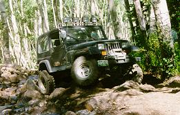
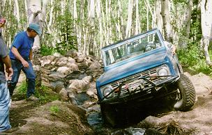
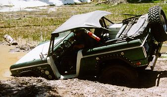

July 3rd, the day would hopefully bring forth a wonderful time 4 wheeling... Paul and Cindy woke in Parachute and munching muffins proceeded to the Island Acres Campground where the rest of the group was waiting. Unbeknown to Paul and Cindy the railroad was in full steam...After meeting up with Ray, Leah, Rose, Nathan, Bob, Dave, Robin, Terry, Diane, Tess, Troy, and Brian with a group of friends, Paul discovered that the railroad had steamed him into leading the trip as Sean (who was the originator of the idea to do 21 Road) was unable to make the trip.
 off we went reading directions as we drove back to Parachute. We actually managed to find the road. At the first fork Paul took the right and Dave took the left. Paul's route proved to be the easier one. Tess and Bob chose that route also...Dave's route found Brian having difficulties and the smell of clutch was getting strong but he persisted and made it up...After having watched Brian have so much fun Terry and Ray followed suit.
Higher and higher we went and more and more fun we had...after having lunch in a meadow, a group of High Country 4 Wheelers, from Glenwood Springs, caught up to us. They warned us about the mud bogs ahead... We drove through a stretch of glacial till and then down a nice steep hill to the 1st of the mud bogs...We made it through the 1st ones, no problems.
 We then came to an area where Paul began to have 2nd thoughts about going on...As it was getting late in the day and there were more bogs and snow ahead. Dave, ever the adventurous one, decided to try the lower bog...Down he went and I do mean down...it was a lot softer than it had looked. He got himself out and then decided on a different route. This time he went down to the top of his hood and could not get himself out as easily as before so Paul to the rescue. After getting Dave out Bob decided to park his vehicle, and Brian his.
As Tess had parked hers back on the road it was up to Terry to give it the old college try...He chose the higher bog it had quite the incline but he made it with only a little slipping on the way down...but boy did he splash the mud around. He turned around and tried to come back up the way he went down but the incline was too steep on one of his attempts he managed to snag a tree stump that pushed his tailpipe into his tire...at first we thought he only lost the bead but after he winched himself up to the top of the bog we found that the tailpipe had cut a hole in the tire instead.
 After watching Terry change this muddy tire we were going to turn around, this was to be a bit difficult as while we were waiting for Terry to get back up to the top of the bog the other goup had caught up to us. So we watched them go through...one of them told us how to get through the lower bog and then found himself having to winched out...they all got over to the other side and were headed on when one of them slipped and landed on a tree that had been covering the road after trying to get him off with a jack and a winch it was discovered the only way to release him from this dilemma was to chop the tree up.
As we were waiting, another group, this one the Larimar County 4 Wheel Drive from Ft. Collins caught us. This group was much bigger and so we ended up with quite the traffic jam and no way to get out until after the guy on the log was set free...It wouldn't have been so bad but the mosquitoes were eating us alive. We also found out that not all frogs say BUD WIS ER.
When the traffic jam finally got cleared up we got ourselves turned around headed out...It was as we were headed for home that Brian lost his fuel pump. Dave put a strap on him and started down the road with him...It was a hair raising ride for Brian. After we reached the main road it proved to be a very dusty road for all of us...There were times when you couldn't see the vehicle in front of you...We got Brian to the rest stop in Parachute where the gas tank was disconnected and the pump taken out...Terry took Brian to Grand Junction where a part store had the part we were almost back to camp when Terry and Brian were spotted coming back...Dave turned around and went back to help...It proved to be a late day for them and Brian was to miss 21 Road as he had to go back the next morning to fix his jeep. What a day...